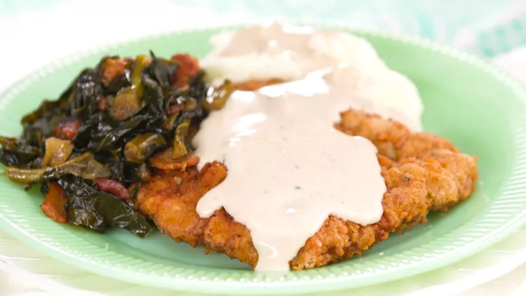

Country Fried Steak

Description
Country-fried steak is made with cube steaks, a tenderized cut of meat that makes a great weeknight dinner entrée. We coated each steak in a crushed saltine cracker mixture, and then fried until golden brown. And, don't forget the gravy!
Ingredients
- 4 (4-oz.) cube steaks
- 2 3/4 teaspoons salt, divided
- 2 1/4 teaspoons pepper, divided
- 1 sleeve saltine crackers (approx. 38-40)
- 1 3/4 cups flour, divided
- 1/2 teaspoon baking powder
- 1/2 teaspoon ground red pepper
- 8 3/4 cups whole milk, divided
- 2 eggs
- 4 cups vegetable oil
- Fresh parsley
Steps
- Sprinkle 1/4 tsp. salt and 1/4 tsp. pepper onto cube steaks, flipping to season both sides.
- In a large bowl, combine one sleeve (approximately 38-40) crushed saltine crackers, 1 cup flour, 1/2 tsp. baking powder, 1 tsp. salt, and 1/2 tsp. pepper. Whisk to combine. Add in an additional 1/2 tsp. of both salt and pepper to the combined cracker mixture, and stir in 1/2 tsp. ground red pepper.
- In a separate bowl, combine 4 3/4 cups milk and 2 eggs, whisking until eggs are completely incorporated.
- Coat each cube steak in flour mixture, then milk mixture, then flour mixture again, making sure that steaks are completely covered.
- Heat 4 cups of vegetable oil (or preferred frying oil) in a large skillet or Dutch oven, until oil is at 360˚F. Place prepared steaks in hot oil, frying for about 10 minutes until steaks are golden brown. Remove from oil and drain on a wire rack-lined jellyroll pan.
- FOR GRAVY: In a large bowl, combine 3/4 cup flour, 1 tsp. salt, 1 tsp. pepper, and 4 cups of milk. Whisk ingredients together. Pour into a skillet with about 1 Tbsp. of remaining frying oil, and whisk on medium heat for about 10 minutes or until mixture has thickened. Pour warm gravy over country-fried steaks. Sprinkle with fresh parsley if desired.